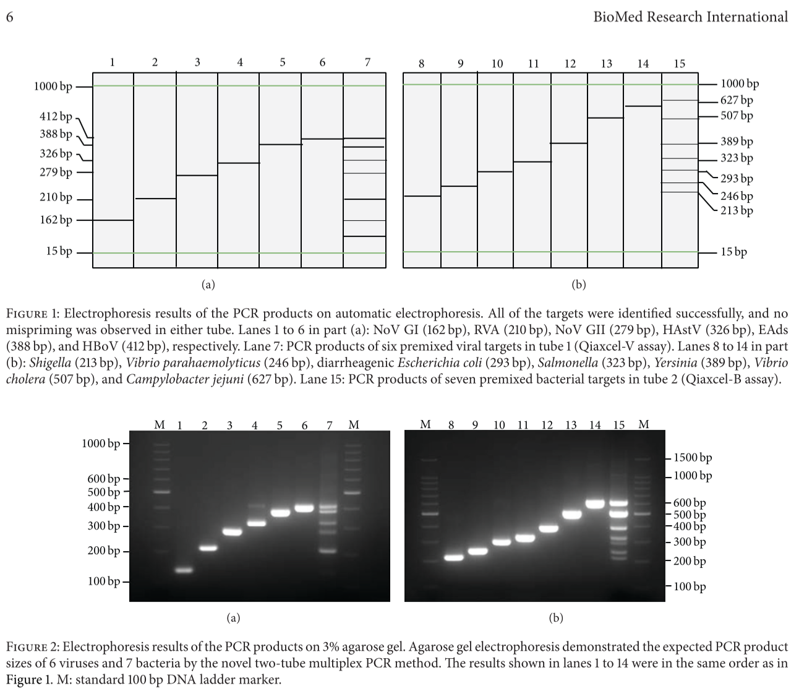

What is PCR ?
ë‹¹ì‹ 은 살면서 이런 이미지들을 본 적 있는가?


위의 사진을 본적 있다면, 다음 논문의 Figure가 무슨 말을 í•˜ê³ ì‹¶ì€ì§€ 아는가?

(Wang et al. 2014)
무슨 소리인지 하나도 ëª¨ë¥´ê² ë‹¤ë©´!😱 앞으로 배워보는 시간을 가질 것이다.
PCR이 무엇인가
PCR은 왜 하는가
PCR은 어떻게 하는가
ì§ì ‘ 해보자
PCR 활용
하지만, 그에 앞서, 우리의 말랑말랑한 뇌를 일깨우는 시간을 ê°€ì ¸ë³´ì🙂
DNA & RNA
Where is Nucleic Acid
Central Dogma
Prokaryote & Eukaryote
Wang, Ji, Ziqian Xu, Peihua Niu, Chen Zhang, Jingyun Zhang, Li Guan, Biao Kan, Zhaojun Duan, and Xuejun Ma. 2014. “A Two-Tube Multiplex Reverse Transcription PCR Assay for Simultaneous Detection of Viral and Bacterial Pathogens of Infectious Diarrhea.†BioMed Research International 2014. https://doi.org/10.1155/2014/648520.